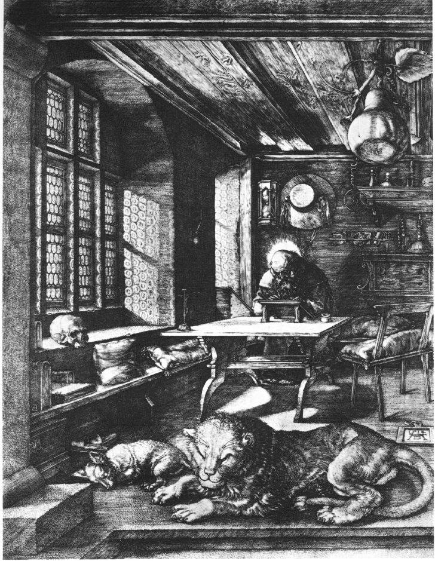

<!DOCTYPE html>
<html class='no-js' lang='en'>
<head>
<meta charset='utf-8'>
<title>Formation à la traduction littéraire &mdash; CETL – Centre Européen de Traduction Littéraire</title>
<meta content='Centre Européen de Traduction Littéraire. Avec le soutien de la Communauté française de Belgique, de la Commission communautaire française.' name='description'>
<meta content='traduction, traduction littéraire' name='keywords'>
<meta content='Françoise Wuilmart' name='author'>
<meta content='Formation à la traduction littéraire &amp;mdash; CETL – Centre Européen de Traduction Littéraire' name='DC.title'>
<meta content='width=device-width, initial-scale=1' name='viewport'>
<link href="stylesheets/styles-79adecb8.css" rel="stylesheet" />
<link href='/humans.txt' rel='author'>
<link href='favicon.ico' rel='shortcut icon'>
<script>
  (function(i,s,o,g,r,a,m){i['GoogleAnalyticsObject']=r;i[r]=i[r]||function(){
  (i[r].q=i[r].q||[]).push(arguments)},i[r].l=1*new Date();a=s.createElement(o),
  m=s.getElementsByTagName(o)[0];a.async=1;a.src=g;m.parentNode.insertBefore(a,m)
  })(window,document,'script','//www.google-analytics.com/analytics.js','ga');
  ga('create', 'UA-2826331-7', 'auto');
  ga('require', 'displayfeatures');
  ga('send', 'pageview');
</script>

</head>
</html>

<body class='home'>
<!--[if lte IE 8]><p class='browser-upgrade'>You are using an
<strong>outdated</strong>
browser. Please
<a href="http://browsehappy.com/" rel="external" target="_blank">upgrade your browser</a>to improve your experience.</p><![endif]-->

<header class='banner navbar navbar-default navbar-static-top' role='banner'>
<div class='container'>
<div class='navbar-header'>
<button class='navbar-toggle' data-target='.navbar-collapse' data-toggle='collapse' type='button'>
<span class='sr-only'>Toggle navigation</span>
<span class='icon-bar'></span>
<span class='icon-bar'></span>
<span class='icon-bar'></span>
</button>
<a class='navbar-brand' href='/'>CETL</a>
</div>
<nav class='collapse navbar-collapse' role='navigation'>
<ul class='nav navbar-nav' id='menu-primary-navigation'>
<li class=''>
<a href="/le-cetl/direction/">Direction</a>
</li>
<li class=''>
<a href="/seminaires-presentiel/">Séminaires en présentiel</a>
</li>
<li class=''>
<a href="/ateliers-visio/">Ateliers en visio-conférence</a>
</li>
<li class=''>
<a href="/articles/">Articles</a>
</li>
<li class=''>
<a href="/liens/">Liens</a>
</li>
<li class=''>
<a href="/contact/">Contact</a>
</li>
</ul>
</nav>
</div>
</header>

<div class='jumbo-background hidden-xs'>
<div class='container'>
<div class='row'>
<div class='col-12'>
<h1 class='jumbo-title'>Centre européen de traduction littéraire</h1>
</div>
</div>
</div>
</div>

<div class='wrap container' role='document'>
<div class='content row'>
<div class='col-sm-12 col-md-3 col-lg-3 hidden-xs sidebar sidebar-left'>
<ol class='menu' id='menu-submenu'>
<li class=''>
<a href="/le-cetl/manifeste-cetl/">Le manifeste du CETL</a>
</li>
<li class=''>
<a href="/le-cetl/fonctionnement-et-inscription/">Fonctionnement et inscription</a>
</li>
<li class=''>
<a href="/le-cetl/conditions-d-admission/">Conditions d’admission</a>
</li>
<li class=''>
<a href="/le-cetl/programmation-et-tarifs/">Programmation et tarifs</a>
</li>
<li class=''>
<a href="/le-cetl/examens/">Examens</a>
</li>
<li class=''>
<a href="/le-cetl/memoires-et-soutenance/">Mémoires et soutenances</a>
</li>
<li class=''>
<a href="/le-cetl/le-diplome/">Le diplôme</a>
</li>
<li class=''>
<a href="/le-cetl/liste-des-enseignants/">Liste des enseignants</a>
</li>
</ol>
</div>

<div class='main col-sm-12 col-md-6 col-lg-6'>
<h1>
Formation à la traduction littéraire
</h1>
<div class="alert wishes">

<h2 style="margin-top: 0;">🌟 Bonne année 2024 ! 🌟</h2>

À tous les passionnés de mots et de cultures, nous vous souhaitons une année remplie de découvertes littéraires fascinantes et d'inspirations sans frontières. Que cette nouvelle année vous apporte joie, réussite et de merveilleux voyages à travers les pages des œuvres du monde entier. Continuons ensemble à célébrer la richesse de la littérature et le pouvoir des mots qui nous unissent.

</div>

<h2>La Formule CETL: unique pour les amateurs de traduction littéraire</h2>

<p>Le CETL est un centre de formation postuniversitaire axé en priorité sur la pratique de la traduction littéraire. Les points forts du cycle sont les exercices à distance confiés aux plus grands traducteurs littéraires actuels. Quelques cours d’encadrement plus théoriques portant sur les aspects pragmatiques du métier et des ateliers de stimulation à l’écriture en langue française viennent compléter la formation annuellement.</p>

<h2>Philosophie de l’enseignement au cetl</h2>

<p>Parti du principe que la traduction littéraire, qui est aussi un art, ne peut s’enseigner de la même manière qu’une science exacte, le CETL s’est voulu un conservatoire. Tout comme la peinture ou la musique, l’art de la transposition des textes d’auteurs peut être développé chez celui qui au départ en a le talent ou le don.</p>

<p>Le CETL confie donc aux plus grands praticiens de la traduction littéraire le soin de communiquer leur savoir-faire aux apprenants.</p>

<p>Ce transfert s’opère par le biais d’exercices proposés par le spécialiste&nbsp;: uniquement des extraits de textes qu’il a traduits lui-même. La correction détaillée et individualisée de chaque exercice a pour but d’objectiver les «&nbsp;erreurs&nbsp;» ou les «&nbsp;faiblesses&nbsp;» avec une extrême précision ; l’impressionnisme subjectif est ici banni. L’étudiant traduira une série de textes en provenance d’une douzaine au moins de formateurs différents.</p>

<p>Dans un premier temps l’enseignement vise à inculquer les règles de base et les techniques fondamentales de la traduction littéraire.</p>

<p>Les cours visent ensuite à sensibiliser l’étudiant à la spécificité des divers genres littéraires (roman, nouvelle, théâtre, poésie, science-fiction, littérature-jeunesse) et prennent aussi en considération le vaste domaine des sciences humaines (philosophie, sociologie, histoire, psychologie, musicologie, etc.)</p>

<h2>Réseaux</h2>

<p>Non seulement axé sur la pratique mais aussi soucieux de professionnalisme, le CETL est par ailleurs une plaque tournante de contacts et d’échanges avec le monde de l’édition; il est une sorte de vivier où les directeurs de collection et les instances culturelles peuvent trouver des talents réels, sélectionnés au départ et formés ensuite par les professionnels. En outre, le travail de fin d’études, qui est une traduction originale, est sanctionné par un jury composé de traducteurs et de représentants de maisons d’édition.</p>

</div>
<aside class='sidebar hidden-xs hidden-sm col-md-3 col-lg-3' role='complementary'>
<div class='thumbnail'>

</div>
</aside>

</div>
</div>
<footer class='container' role='contentinfo'>
<div class='row'>
<div class='col-lg-12'>
<p class='text-center'>
© 2024 CETL – Centre Européen de Traduction Littéraire
</p>
</div>
</div>
</footer>

<script src='https://cdn.jsdelivr.net/lodash/4.17.4/lodash.min.js'></script>
<script src="javascripts/scripts-da39a3ee.js"></script>
</body>
